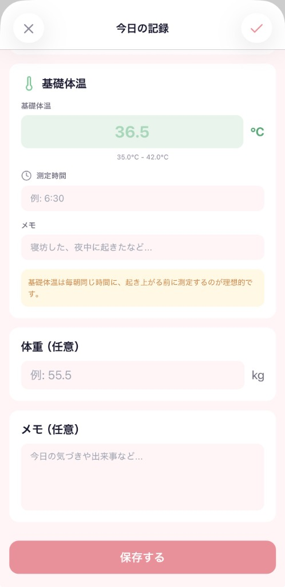
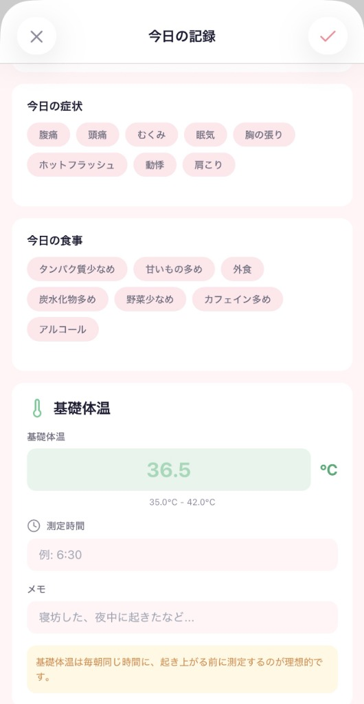

こんな「モヤモヤ」、抱えていませんか？
理由もなくイライラして、自己嫌悪におちいる
「昔はこんなじゃなかったのに」と落ち込む
急な体調変化で、予定通りに動けない
誰にもわかってもらえない孤独感がある
LunaLogが、心の常備薬になる理由
1. 10秒で、心の荷物を降ろす
「今日はつらかった」その一言を記録するだけ。
直感的なスライダーで、言葉にならない気分の波を可視化。
自分自身のSOSに、いち早く気づけます。

2. 今のあなたに必要な、優しい羅針盤
不安定な周期や体調に合わせて。
「今は無理しなくていい時期ですよ」と、
AIが医学的根拠に基づいたアドバイスをそっと提案します。
3. 「言わなくても伝わる」安心感
パートナーや家族への説明は、ときには負担になるもの。
あなたの今の状態を、角が立たない言葉でシェア。
大切な人との関係を、もっと穏やかに。
使い方は、深呼吸するようにシンプル
1
記録する
気分のままにタップするだけ。
頑張らなくていい記録。
2
気づく
グラフを見て
「波があるのが私なんだ」と知る。
3
整う
アドバイスに耳を傾け
自分をいたわる時間を持つ。